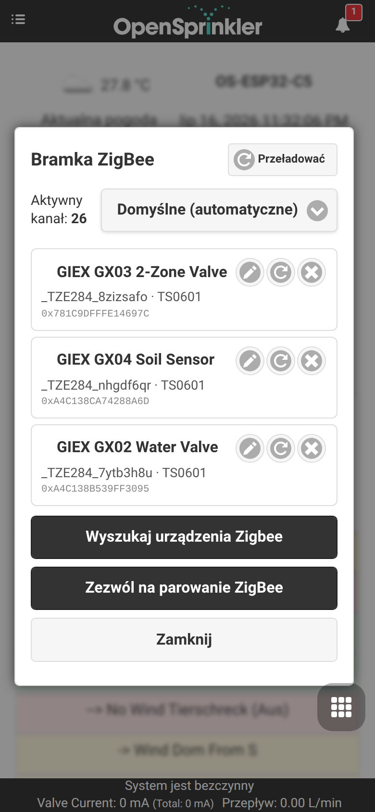
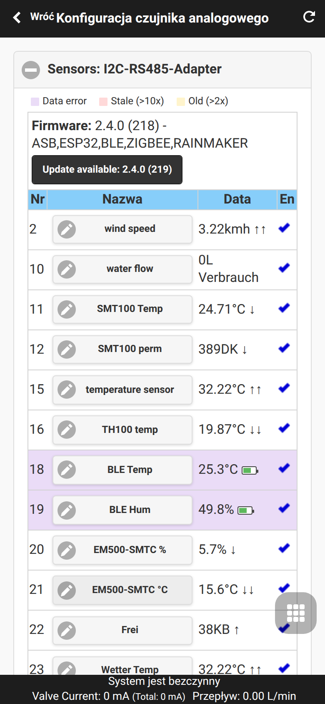
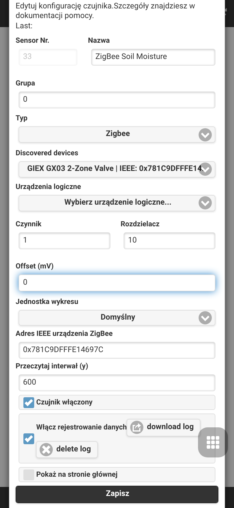
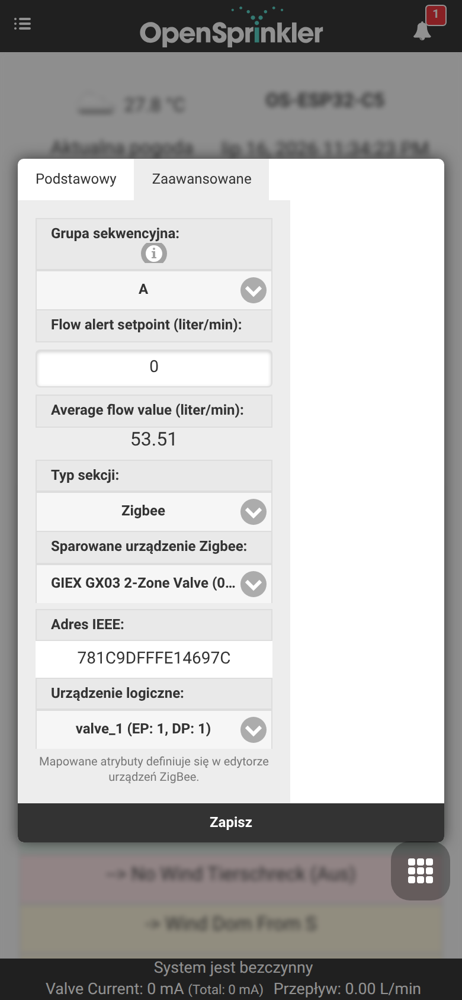

Integracja bramki Zigbee
OpenSprinklerPro oferuje natywne możliwości koordynacji Zigbee bezpośrednio na płytce ESP32-C5. Jednoukładowe rozwiązanie ESP32-C5 obsługuje dwuzakresowe Wi-Fi 6 2,4 GHz, Bluetooth 5 (LE) oraz 802.15.4 (Zigbee 3.0 / Thread).
Korzystając z wariantu firmware'u Zigbee, sterownik OpenSprinkler działa jako pełnoprawny koordynator Zigbee. Może być parowany z czujnikami automatyki domowej, inteligentnymi zaworami, sondami wilgotności gleby i czujnikami temperatury, aby dostosowywać harmonogramy podlewania na podstawie lokalnych warunków w czasie rzeczywistym.
📸 Prowadzony proces konfiguracji
Ten przewodnik krok po kroku pokazuje, jak skonfigurować tryb radiowy, sparować urządzenia Zigbee i przypisać ich atrybuty do czujników analogowych.
Krok 1: Konfiguracja trybu radiowego
Najpierw sprawdź, czy sterownik ESP32-C5 jest ustawiony na właściwy tryb radiowy. Domyślnie ESP32-C5 może pracować w kilku trybach. Ustawienia trybu znajdziesz w menu bocznym w sekcji Setup ESP32 Mode.

Aby korzystać z Zigbee, włącz tryb Zigbee Gateway / Coordinator. Inicjuje on natywne radio 802.15.4 do zarządzania kanałami Zigbee, routingu urządzeń i tworzenia sieci.
Krok 2: Dołączanie i parowanie urządzeń
Gdy tryb Zigbee jest aktywny, z menu bocznego możesz otworzyć stronę ZigBee Gateway. Na tej stronie sterujesz oknem parowania i zarządzasz zarejestrowanymi urządzeniami fizycznymi.

- Kliknij Permit Join (Zezwól na dołączenie, zwykle 60 sekund), aby otworzyć sieć dla nowych urządzeń.
- Przełącz urządzenie Zigbee (np. inteligentny zawór GIEX, czujnik gleby Tuya lub czujnik temperatury Xiaomi) w tryb parowania (zwykle przytrzymując przycisk parowania przez 5 sekund).
- Urządzenie zostanie wykryte, otrzyma krótki adres oraz wyświetli swój 64-bitowy adres IEEE, typ urządzenia i jakość połączenia.
Krok 3 (opcjonalnie): Integracje zewnętrzne
Ten krok jest opcjonalny i nie jest wymagany do działania stacji ani czujników Zigbee. Otwórz Edytuj opcje → Integracje (Integrations) tylko wtedy, gdy chcesz przekazywać swoje dane do systemów zewnętrznych: publikować odczyty czujników i stany zaworów przez MQTT, zapisywać je w InfluxDB, włączyć zdalny dostęp w chmurze za pomocą OpenThings Cloud (OTC) lub wysyłać powiadomienia e-mail / IFTTT o zdarzeniach sterownika.

Krok 4: Konfiguracja wielu czujników i kalibracji
Aby wykorzystać dane czujników do korekt programu, przejdź do strony Czujniki analogowe (Analog Sensor Configuration) z menu w stopce. Ten przegląd wyświetla wszystkie aktywne czujniki logiczne, ich powiązania fizyczne oraz stan baterii.

Krok 5: Dodawanie/edycja czujnika Zigbee
Kliknij Dodaj czujnik (Add Sensor) (lub edytuj istniejący), aby przypisać konkretny atrybut urządzenia Zigbee (np. procent wilgotności gleby lub temperaturę) do gniazda czujnika analogowego.

W tym edytorze możesz: - Nadać czujnikowi rozpoznawalną Nazwę. - Wybrać Typ czujnika (np. wilgotność, temperatura, bateria itp.). - Wybrać Urządzenie źródłowe (Source Device) z listy rozwijanej sparowanych węzłów Zigbee. - Zdefiniować własne przesunięcia kalibracji i progi wyzwalania.
💧 Inteligentne zawory GIEX i sterowanie strefami
Poza odczytem czujników OpenSprinklerPro może sterować zasilanymi bateryjnie zaworami Zigbee GIEX bezpośrednio jako strefami nawadniania (stacjami). Każde wyjście zaworu jest przypisane do stacji i otwierane oraz zamykane bezprzewodowo przez sterownik — bez okablowania 24 V, elektrozaworów czy skrzynek zaworowych.
Co wyróżnia te zawory
- Bezprzewodowe i zasilane bateryjnie – zawór działa na wewnętrznych bateriach i komunikuje się przez Zigbee, więc strefę można umieścić w dowolnym miejscu w zasięgu koordynatora.
- Platforma inteligentnych zaworów Tuya – zawory GIEX udostępniają swoje funkcje jako punkty danych Tuya (DP): sterowanie wł./wył., timer odliczający, nawadnianie cykliczne lub czasowe, a w modelach z licznikiem – telemetrię przepływu i objętości.
- Wiele stref w jednym urządzeniu – pojedynczy GX03 zapewnia dwa całkowicie niezależne wyjścia, więc jedno sparowane urządzenie daje dwie odrębne strefy OpenSprinkler.
- Raportowanie baterii – pozostały poziom baterii jest wyświetlany bezpośrednio na karcie stacji w panelu.
Rodzina produktów GIEX
| Model | Typ | Wyjścia / urządzenia logiczne | Typowe zastosowanie |
|---|---|---|---|
| GX02 | Pojedynczy inteligentny zawór wodny | 1 zawór (valve_1, DP 1) |
Jedna bezprzewodowa strefa nawadniania |
| GX03 | Inteligentny zawór wodny 2-strefowy | 2 zawory (valve_1 = DP 1, valve_2 = DP 2) |
Dwie niezależne strefy bezprzewodowe z jednego urządzenia |
| GX04 | Czujnik wilgotności gleby i temperatury | Wilgotność gleby + temperatura | Korekty programu na podstawie wilgotności (używany jako czujnik analogowy, patrz Krok 5 powyżej) |
Po sparowaniu wszystkie te urządzenia są wymienione razem na stronie ZigBee Gateway wraz z ich przyjazną nazwą, producentem/modelem i 64-bitowym adresem IEEE:
Jak współpracują z OpenSprinkler
Gdy zawór jest używany jako stacja Zigbee, sterownik działa jako koordynator Zigbee i tłumaczy każde uruchomienie stacji na polecenie wł./wył. (lub DP Tuya) wysyłane do właściwego wyjścia zaworu:
- Sparowane urządzenie jest identyfikowane przez jego 64-bitowy adres IEEE.
- Urządzenie logiczne wybiera pojedyncze wyjście wewnątrz tego urządzenia — np.
valve_1 (EP: 1, DP: 1)lubvalve_2 (EP: 1, DP: 2)dla dwóch stref GX03. - Uruchomienie stacji otwiera zawór; czas pracy, harmonogramy programów, grupy sekwencyjne, opóźnienia deszczu/czujnika i sterowanie ręczne działają dokładnie tak, jak w strefie przewodowej.
Różni się to od przypisania czujnika z Kroku 5: czujnik odczytuje dane do korekt programu, natomiast stacja Zigbee aktywnie steruje zaworem.
Konfiguracja zaworu GIEX jako strefy
- Sparuj zawór na stronie ZigBee Gateway (patrz Krok 2 powyżej). Urządzenie GIEX pojawi się ze swoją przyjazną nazwą i adresem IEEE.
- W panelu otwórz ustawienia stacji (ikona koła zębatego na karcie strefy) i przejdź do zakładki Zaawansowane (Advanced).
- Ustaw Typ stacji (Station Type) na Zigbee.
- Wybierz sparowane urządzenie Zigbee (np. GIEX GX03 2-Zone Valve). Adres IEEE zostanie wypełniony automatycznie.
- Wybierz urządzenie logiczne dla wyjścia, którym ma sterować ta stacja —
valve_1dla pierwszej strefy,valve_2dla drugiej.

- Naciśnij Wyślij (Submit). Stacja będzie teraz bezprzewodowo otwierać i zamykać wybrane wyjście zaworu GIEX przy każdym uruchomieniu.
W przypadku dwustrefowego GX03 powtórz kroki dla drugiej stacji i wybierz valve_2, aby oba wyjścia były sterowane niezależnie.
Dostępność platformy
Stacje Zigbee i funkcja stref GIEX wymagają sterownika ESP32-C5 z wariantem firmware'u Zigbee. Nie są dostępne w wersjach ESP8266 ani OSPi.
🛠️ Obsługiwane urządzenia i szczegóły techniczne
Wewnętrzny firmware obsługuje standardowe klastry Zigbee 3.0: - 0x0402: Pomiar temperatury (Tuya, Xiaomi, Sonoff) - 0x0405: Wilgotność względna / wilgotność gleby (GIEX, Tuya, Moes) - 0x0001: Konfiguracja zasilania (raportowanie procentu baterii)
Mapowanie urządzeń wielokanałowych
W przypadku złożonych, wielokanałowych inteligentnych zaworów (jak dwuwyjściowy zawór nawadniający GIEX GX02) koordynator dzieli poszczególne stany zaworów i kanały telemetrii na odrębne logiczne podurządzenia. Zapewnia to, że każda strefa może być wyzwalana lub skalowana niezależnie.
Współistnienie radiowe (Coexistence)
ESP32-C5 zarządza jednocześnie skanowaniem BLE, ruchem Wi-Fi 6 i pakietami Zigbee 802.15.4. Podczas skanowania czujników BLE protokół Zigbee Packet Traffic Arbitration (PTA) chwilowo obniża priorytet punktów końcowych Zigbee, aby uniknąć kolizji radiowych i utraty pakietów, natychmiast przywracając pełny priorytet po wstrzymaniu aktywnego skanowania.